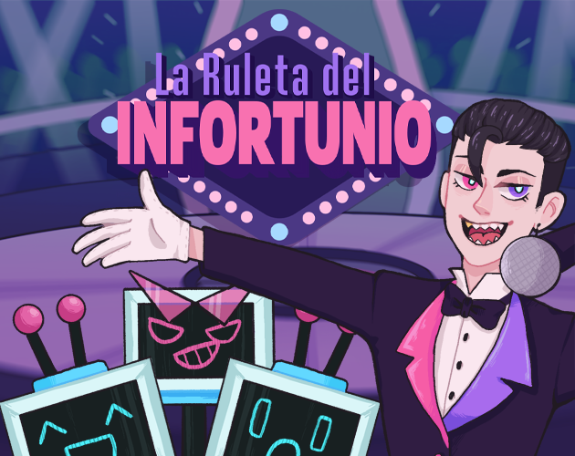

Viktor's
Mayhem
Zieh den Hebel. Nimm deinen Fluch. Überlebe die Arena. Eine TV-Spielshow, in der niemand mitmachen wollen sollte, moderiert von jemandem, den dein Leid begeistert.

Das Spiel
Viktor's Mayhem, auf Spanisch erschienen als La Ruleta del Infortunio, ist eine TV-Spielshow, in der niemand mitmachen wollen sollte. Ein Spielautomat würfelt dein Schicksal aus, und welches Unglück auch fällt, du nimmst es mit in einen Arenakampf. Bewege dich, weiche aus und kämpfe dich hindurch, während ein begeisterter Moderator dein Leid kommentiert.
Design rund um den Zufall
Die Design-Wette: die Bestrafung zum Inhalt machen. Zufällige Handicaps geben derselben Arena in jedem Durchgang eine neue Textur, sodass jeder Fluch verändert, wie du spielen musst, statt nur die Zahlen zu verschlechtern. Die eigentliche Arbeit war, die Unglücke so zu balancieren, dass sie wirklich Spaß machen: grausam genug, um die Prämisse der Show zu rechtfertigen, aber nie so grausam, dass ein Durchgang schon vor dem Start verloren wirkt.
Was ich entworfen habe
- Der Game-Loop im Showformat: Spielautomat, dann Fluch, dann Arena, dann Belohnung.
- Das Repertoire an Unglücken und die Balancing-Regeln, die es spielbar halten.
- Kampf- und Arenabegegnungen, abgestimmt auf WASD-Bewegung, Ausweichen und Nahkampfangriffe.
Spielbar · die Kernmechanik
Zieh den Hebel. Nimm deinen Fluch.
Der Spielautomat wählt ein Missgeschick, dann überlebst du fünfzehn Sekunden Tomatenbeschuss vom Studiopublikum. Jeder Fluch ändert, wie du spielen musst, nicht nur eine Zahl. Dash durch die Tomaten, wenn es sein muss.
Dann beweg dich mit Pfeiltasten, WASD oder dem Finger · Leertaste oder Dash-Knopf zum Dashen